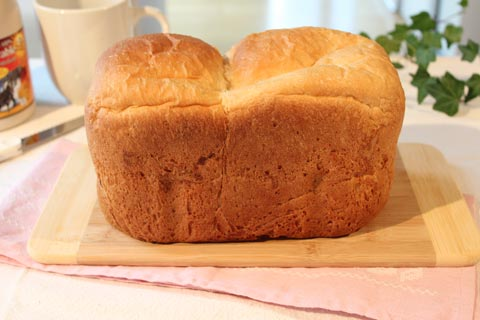

自宅でおいしいパンが焼ける、ＴＶ番組お墨付きのブレッドメーカー
借りているコンドの部屋が売りにだされていたときのこと、下見にくるひとたちの話題の的になったのが、マジックブレット とともに私が愛してやまないキッチン家電、ZOJIRUSHIのブレッドメーカー
とともに私が愛してやまないキッチン家電、ZOJIRUSHIのブレッドメーカー。
カナダでは日本ほどブレッドメーカーに対して馴染みがないのか、パン生地を作るだけの道具だとおもってるひとも結構いて、材料を投入してボタンを押すだけで手間のかかる生地作りから焼き上げまで全て一台でこなせるとわかると、ええ、と皆一様に心底驚く。そして、どこで買ったのか必ず聞かれる。
私はアマゾンカナダをとおして買った。
SHOPPING BAGという製品を実際につかってみて比較するテレビの番組があるのだが、数年前のこと、その番組で、ZOJIRUSHI、BLACK&DECKER、SUNBEAMの３台のブレッドメーカーを比較していたのを観た。そしてそのとき見事１位に輝いたのがZOJIRUSHIのブレッドマシーン。番組おすすめのブレッドメーカーと認定された。
そもそも、番組のなかで比較していたZOJIRUSHIのブレッドメーカーは他の２台より３～４倍は値段が高い。なので然るべき当然の結果なのかもしれないが、こちらでは、安かろう悪かろう、の傾向が顕著で、安物買いの銭失いにならないように気をつけなければならない。その点において妙に納得し、そのとき以来、買うなら絶対、ZOJIRUSHIのブレッドメーカーと決めていた。
それでもＪ次郎とは正反対に、お金を使うこと＆家のなかにものを増やすことに関して慎重な私は買うと決めるまでに相当時間がかかった。私にとっては高価な買い物だし、場所もとるし、毎日食べるパンは、手ごねでもそこそこおいしいのが焼けていたから。ただ、アトピーによる手の甲と手首の内側の炎症がひどくなってどうにもならなくなり、水に触れる機会を少しでも減らしたかったため、とうとう思い切って購入した。
結論からいうと、大正解。予想をはるかに上回る、使える家電で大満足。
パンだけでなくジャムができたりケーキも焼けたりと利点は数多いが、ざっと挙げてみると、
その１；トロントにもパン屋はないわけではないが、日本ほど手軽に焼きたてのパンを買える機会が多いわけではないので、焼きたてのまだ温かいパンをお呼ばれされた際に持参すると、宗教、国籍、老若男女問わず感嘆の声があがり、確実に喜ばれる。
そして、それがきっかけでＪ次郎の友人も購入。一人暮らしの彼女は先ほどの番組でも紹介されていた、コンパクトな１パウンドサイズを購入した。対して我が家で活躍しているのは２パウンドサイズ。とはいえ、友人を招いたりすると一回の食事時にはすぐなくなってしまう。
その２；無添加のパンが食べられる。カナダの店で売られているパンにはほぼ必ずソイレシチンが加えられている。大豆にINTORELANCEがある私は、これに敏感に反応する。このブレッドメーカーがなかったら、私の食事からパンが消えるところだった。
その３；コスト面。パンを買うためだけに外に行かなくてもよくなった。我が家では８キログラムのオールパーパスフラワーという日本でいる中力粉を買っている。何故かというと、その安さ。８キロで１０ドル満たないのだ。普通パン作りには強力粉を使うが、これでもおいしいパンが焼けるのだ。すると１ローフあたりの実質コストは数十円くらい。それで誰もが絶賛するおいしい焼きたてのパンが毎日のように自宅で簡単に食べられるのだから、初期投資としてのマシーン自体の価格はコスパ的には安いのだ。
万一失敗してしまったり、食べ残したパンはマジックブレットで生パン粉を作る。ハンバーグのつなぎにはこのパン粉で充分おいしくできる。

朝、焼きたてのパンの香りが部屋中に充満しているとなんとも満ち足りた、幸せな気分になる。
＞＞＞ Zojirushi2-Pound-LoafBreadmakerCANADA (amazon CANADA)
＞＞＞ Zojirushi2-Pound-LoafBreadmakerUSA (amazon USA)
＞＞＞ Zojirushi1-pound-LoafBreadmakerCANADA (amazon CANADA)
＞＞＞ Zojirushi1-pound-loafBreadmakerUSA (amazon USA)